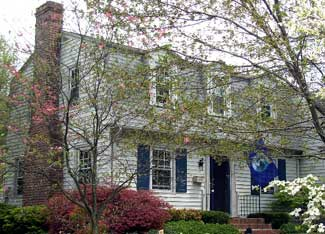

BARBARA PLEASANT
To green up this home in Blacksburg, Va., the owners worked from the top down, first sealing cracks in their “envelope” before insulating their “shell.” It's easy to pick up the lingo of green remodeling on a green homes tour.